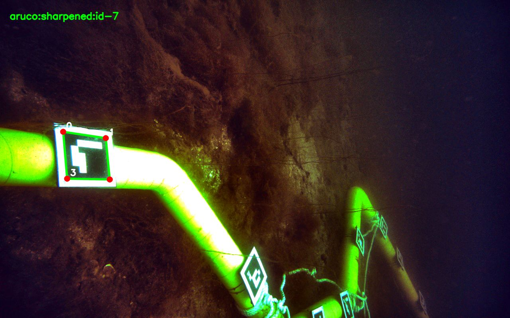
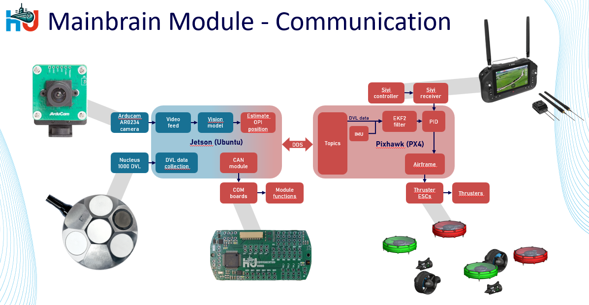

QUEST / HU ROBOSUB / 2026
Helping a robot
see underwater.
Camera and sensor data only become useful when the system can work with them. At HU Robosub, I helped build that connection for Aurora.

01 / THE CHALLENGE
The challenge
Water changes colours and reflections make camera images difficult to interpret. The robot also needs information about its movement. For the competition in Norway, the team worked on detecting yellow pipes and ArUco markers: square patterns with individual IDs.
02 / MY CONTRIBUTION
My contribution
I configured the Arducam camera on the NVIDIA Jetson and worked on streaming live video to QGroundControl on the controller.
I worked with OpenCV to detect ArUco markers underwater, tested image processing under different lighting conditions and collected underwater images for pipe detection.
I worked on DVL integration, from physical connectivity and Python software to passing data through ROS 2 and DDS to the PX4 controller, building on previous team members’ work.
03 / THE OUTCOME
The outcome
ArUco markers were detected underwater, live footage became available on the controller and DVL measurements reached the PX4. Water-basin tests verified the data connection. These connections provide building blocks for further development of autonomous functions.


04 / A CLOSER LOOK
A closer look at the technology
Camera → controller
Arducam AR0234 → NVIDIA Jetson → GStreamer / UDP → QGroundControl. Image conversion and rotation made the footage usable by the operator.
DVL → control
DVL → Ethernet → Python / ROS 2 → Micro-XRCE-DDS → PX4. The DVL uses sound to measure velocity; this connection makes the readings available to the controller.

Computer vision
OpenCV for ArUco detection. I investigated colour and line detection for yellow pipes. Wesse developed the trained YOLO model further using collected images; reflections remained a challenge.

What I learned
I learned that an algorithm alone does not make a working robot. Drivers, wiring, messages and test conditions must all fit together. Collaboration and documenting those connections mattered as much as writing code.
Want to learn more about my projects or discuss a graduation assignment? Send me a message on LinkedIn.
Get in touch ↗